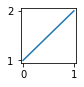

from fastcore.test import *
from base64 import b64decode
from io import BytesIO
from PIL import Imageshell
A shell for running notebook code without a notebook server
CaptureShell
CaptureShell (path:str|Path=None)
Execute the IPython/Jupyter source code
| Type | Default | Details | |
|---|---|---|---|
| path | str | Path | None | Add path to python path |
s = CaptureShell()CaptureShell.run
CaptureShell.run (code:str, stdout=True, stderr=True)
Run code, returning a list of all outputs in Jupyter notebook format
| Type | Default | Details | |
|---|---|---|---|
| code | str | Python/IPython code to run | |
| stdout | bool | True | Capture stdout and save as output? |
| stderr | bool | True | Capture stderr and save as output? |
s.run("print(1)")[{'name': 'stdout', 'output_type': 'stream', 'text': ['1\n']}]Code can include magics and ! shell commands:
s.run("%time 1+1")[{'name': 'stdout',
'output_type': 'stream',
'text': ['CPU times: user 3 us, sys: 0 ns, total: 3 us\n',
'Wall time: 5.72 us\n']},
{'data': {'text/plain': ['2']},
'metadata': {},
'output_type': 'execute_result',
'execution_count': 1}]The result of the last successful execution is stored in result:
s.result2A trailing ; stops the result from being captured:
s.run("1+2;")[]Images and matplotlib figures are captured and base64 encoded:
res = s.run('''import matplotlib.pyplot as plt
plt.figure(figsize=(1,1))
plt.plot([1,2])''')
Image.open(BytesIO(b64decode(res[1]['data']['image/png'])))
If an exception is raised then the exception type, object, and stacktrace are stored in exc:
s.run('raise Exception("Oops")')
typ,obj,st = s.exc
typ,obj(Exception, Exception('Oops'))print(st)---------------------------------------------------------------------------
Exception Traceback (most recent call last)
Input In [1], in <cell line: 1>()
----> 1 raise Exception("Oops")
Exception: OopsCaptureShell.cell
CaptureShell.cell (cell, stdout=True, stderr=True)
Run cell, skipping if not code, and store outputs back in cell
clean = Path('../tests/clean.ipynb')
nb = read_nb(clean)
c = nb.cells[1]
c{ 'cell_type': 'code',
'execution_count': None,
'id': 'b123d6d0',
'idx_': 1,
'metadata': {},
'outputs': [],
'source': 'print(1)\n2'}s.cell(c)
c.outputs[{'name': 'stdout', 'output_type': 'stream', 'text': ['1\n']},
{'data': {'text/plain': ['2']},
'metadata': {},
'output_type': 'execute_result',
'execution_count': 3}]CaptureShell.run_all
CaptureShell.run_all (nb, exc_stop:bool=False, preproc:collections.abc.Callable=<function _false>, postproc:collections.abc.Callable=<function _false>, inject_code:Optional[str]=None, inject_idx:int=0)
Run all cells in nb, stopping at first exception if exc_stop
| Type | Default | Details | |
|---|---|---|---|
| nb | A notebook read with nbclient or read_nb |
||
| exc_stop | bool | False | Stop on exceptions? |
| preproc | Callable | _false | Called before each cell is executed |
| postproc | Callable | _false | Called after each cell is executed |
| inject_code | str | None | None | Code to inject into a cell |
| inject_idx | int | 0 | Cell to replace with inject_code |
nb.cells[2].outputs[]s.run_all(nb)
nb.cells[2].outputs[{'data': {'text/plain': ['<IPython.core.display.Markdown object>'],
'text/markdown': ["This is *bold*. Here's a [link](https://www.fast.ai)."]},
'metadata': {},
'output_type': 'execute_result',
'execution_count': 6}]With exc_stop=False (the default), execution continues after exceptions, and exception details are stored into the appropriate cell’s output:
nb.cells[-1].source'raise Exception("Oopsie!")'nb.cells[-1].outputs[{'ename': "<class 'Exception'>",
'evalue': 'Oopsie!',
'output_type': 'error',
'traceback': ['\x1b[0;31m---------------------------------------------------------------------------\x1b[0m',
'\x1b[0;31mException\x1b[0m Traceback (most recent call last)',
'Input \x1b[0;32mIn [1]\x1b[0m, in \x1b[0;36m<cell line: 1>\x1b[0;34m()\x1b[0m\n\x1b[0;32m----> 1\x1b[0m \x1b[38;5;28;01mraise\x1b[39;00m \x1b[38;5;167;01mException\x1b[39;00m(\x1b[38;5;124m"\x1b[39m\x1b[38;5;124mOopsie!\x1b[39m\x1b[38;5;124m"\x1b[39m)\n',
'\x1b[0;31mException\x1b[0m: Oopsie!']}]With exc_stop=True (the default), exceptions in a cell are raised and no further processing occurs:
try: s.run_all(nb, exc_stop=True)
except Exception as e: print(f"got exception: {e}")got exception: Oopsie!We can pass a function to preproc to have it run on every cell. It can modify the cell as needed. If the function returns True, then that cell will not be executed. For instance, to skip the cell which raises an exception:
nb = read_nb(clean)
s.run_all(nb, preproc=lambda c: 'raise' in c.source)This cell will contain no output, since it was skipped.
nb.cells[-1].outputs[]nb.cells[1].outputs[{'name': 'stdout', 'output_type': 'stream', 'text': ['1\n']},
{'data': {'text/plain': ['2']},
'metadata': {},
'output_type': 'execute_result',
'execution_count': 11}]You can also pass a function to postproc to modify a cell after it is executed.
CaptureShell.execute
CaptureShell.execute (src:Union[str,pathlib.Path], dest:Optional[str]=None, exc_stop:bool=False, preproc:collections.abc.Callable=<function _false>, postproc:collections.abc.Callable=<function _false>, inject_code:Optional[str]=None, inject_path:Union[str,pathlib.Path,NoneType]=None, inject_idx:int=0)
Execute notebook from src and save with outputs to `dest
| Type | Default | Details | |
|---|---|---|---|
| src | str | Path | Notebook path to read from | |
| dest | str | None | None | Notebook path to write to |
| exc_stop | bool | False | Stop on exceptions? |
| preproc | Callable | _false | Called before each cell is executed |
| postproc | Callable | _false | Called after each cell is executed |
| inject_code | str | None | None | Code to inject into a cell |
| inject_path | str | Path | None | None | Path to file containing code to inject into a cell |
| inject_idx | int | 0 | Cell to replace with inject_code |
This is a shortcut for the combination of read_nb, CaptureShell.run_all, and write_nb.
s = CaptureShell()
try:
s.execute(clean, 'tmp.ipynb')
print(read_nb('tmp.ipynb').cells[1].outputs)
finally: Path('tmp.ipynb').unlink()[{'name': 'stdout', 'output_type': 'stream', 'text': ['1\n']}, {'data': {'text/plain': ['2']}, 'execution_count': 2, 'metadata': {}, 'output_type': 'execute_result'}]p = Path.home()/'git'/'fastcore'/'nbs'
n = p/'03a_parallel.ipynb'CaptureShell.prettytb
CaptureShell.prettytb (fname:Union[str,pathlib.Path]=None)
Show a pretty traceback for notebooks, optionally printing fname.
| Type | Default | Details | |
|---|---|---|---|
| fname | str | Path | None | filename to print alongside the traceback |
If an error occurs while running a notebook, you can retrieve a pretty version of the error with the prettytb method:
s = CaptureShell()
try:
s.execute('../tests/error.ipynb', exc_stop=True)
except:
print(s.prettytb())AssertionError in ../tests/error.ipynb:
===========================================================================
While Executing Cell #2:
---------------------------------------------------------------------------
AssertionError Traceback (most recent call last)
Input In [1], in <cell line: 3>()
1 # some comments
2 print('hello')
----> 3 foo()
File ~/git/execnb/tests/err.py:2, in foo()
1 def foo():
----> 2 assert 13 == 98
AssertionError:
If you pass inject_code to CaptureShell.execute or CaptureShell.run_all, the source of nb.cells[inject_idx] will be replaced with inject_code. By default, the first cell is replaced. For instance consider this notebook:
nb = read_nb('../tests/params.ipynb')
for c in nb.cells: print('- ',c.source)- a=1
- print(a)We can replace the first cell with a=2 by passing that as inject_code, and the notebook will run with that change:
nb = read_nb('../tests/params.ipynb')
s.run_all(nb, inject_code="a=2")
list(nb.cells)[{'cell_type': 'code',
'execution_count': 1,
'id': 'a63ce885',
'metadata': {},
'outputs': [],
'source': 'a=2',
'idx_': 0},
{'cell_type': 'code',
'execution_count': 2,
'id': 'ea528db5',
'metadata': {},
'outputs': [{'name': 'stdout', 'output_type': 'stream', 'text': ['2\n']}],
'source': 'print(a)',
'idx_': 1}]This can be used with CaptureShell.execute to parameterise runs of models in notebooks. Place any defaults for configuration code needed in the first cell, and then when running execute pass in new parameters as needed in inject_code. To replace only some of the defaults, leave an empty cell as the second cell, and inject code using inject_idx=1 to replace the empty second cell with code that overrides some of the defaults set in the first cell. When using execute you can pass inject_path instead of inject_code to read the injected code from a file.
exec_nb
exec_nb (src:str, dest:str='', exc_stop:bool=False, inject_code:str=None, inject_path:str=None, inject_idx:int=0)
Execute notebook from src and save with outputs to dest
| Type | Default | Details | |
|---|---|---|---|
| src | str | Notebook path to read from | |
| dest | str | Notebook path to write to | |
| exc_stop | bool | False | Stop on exceptions? |
| inject_code | str | None | Code to inject into a cell |
| inject_path | str | None | Path to file containing code to inject into a cell |
| inject_idx | int | 0 | Cell to replace with inject_code |
This is the command-line version of CaptureShell.execute. Run exec_nb -h from the command line to see how to pass arguments. If you don’t pass dest then the output notebook won’t be saved; this is mainly useful for running tests.